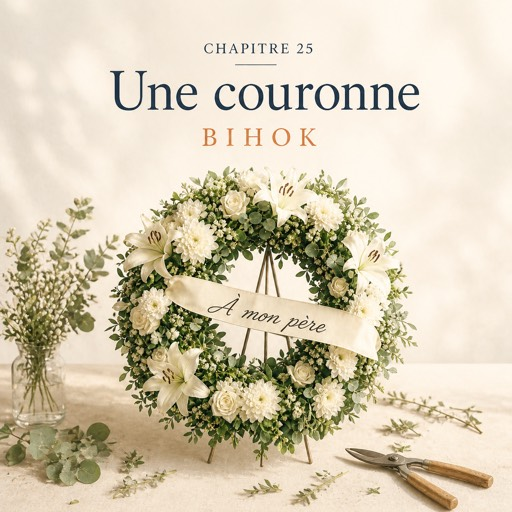

Le mercredi 12 novembre — середа, 12 листопада
Le magasin sent l'eau froide et l'eucalyptus.
У магазині пахне холодною водою та евкаліптом.
Natalia change l'eau des anémones ; Karim porte les seaux sur le trottoir, un par un, sans enlever ses écouteurs.
Наталя міняє воду анемонам; Карім виносить відра на тротуар, одне за одним, не знімаючи навушників.
Un mercredi de novembre, gris et calme.
Листопадова середа, сіра й тиха.
En début d'après-midi, une femme entre. Trente ans, peut-être.
На початку пообіддя заходить жінка. Років тридцять, може.
Elle reste longtemps devant la vitrine.
Вона довго стоїть перед вітриною.
Elle regarde les fleurs, mais elle ne les voit pas. Natalia s'approche doucement.
Дивиться на квіти — і не бачить їх. Наталя тихо підходить.
— Bonjour. Je voudrais... une couronne.
— Добрий день. Я хотіла б... вінок.
Une couronne, chez un fleuriste, c'est presque toujours pour un enterrement.
Вінок у квітковому магазині — це майже завжди похорон.
Natalia comprend tout de suite. Elle parle bas, lentement, une question à la fois.
Наталя розуміє одразу. Вона говорить тихо, повільно, питання по одному.
— Oui. C'est pour quand ?
— Так. На коли це?
— Pour demain. La cérémonie est à onze heures.
— На завтра. Церемонія об одинадцятій.
— À l'église, près du parc. J'ai l'adresse sur mon téléphone.
— У церкві, біля парку. Адреса в мене в телефоні.
— D'accord. On a le temps.
— Добре. Час у нас є.
La femme respire un peu mieux.
Жінка дихає трохи вільніше.
— C'est pour mon père. Je l'ai perdu dimanche.
— Це для мого батька. Я втратила його в неділю.
— Quelles fleurs est-ce qu'il aimait ?
— Які квіти він любив?
La femme lève les yeux. Personne ne lui a encore posé cette question.
Жінка підводить очі. Цього питання їй ще ніхто не поставив.
— Il aimait les fleurs blanches. Il avait un jardin, avant.
— Він любив білі квіти. Колись у нього був сад.
— Il venait au marché le samedi matin... Il aimait les lys. Mon papa...
— Він приходив на ринок у суботу вранці... Він любив лілії. Мій тато...
Sa voix se casse au milieu du mot.
Її голос ламається посеред слова.
Natalia ne dit pas « désolée ».
Наталя не каже «мені шкода».
Elle va chercher le tabouret de l'atelier, le pose près d'elle et attend.
Вона йде по табурет з майстерні, ставить його поруч і чекає.
La femme s'assoit. Le magasin est très silencieux.
Жінка сідає. У магазині дуже тихо.
Solange est là, tout à coup. Personne ne l'a entendue venir.
Раптом поруч Соланж. Ніхто не чув, як вона підійшла.
— Toutes mes condoléances, madame, dit Solange.
— Мої щирі співчуття, мадам, — каже Соланж.
— On va faire une couronne blanche. Des lys, des chrysanthèmes, de la verdure.
— Ми зробимо білий вінок. Лілії, хризантеми, зелень.
— C'est sobre et c'est beau. Ne vous inquiétez pas pour la taille : on sait faire.
— Це стримано і гарно. За розмір не хвилюйтеся: ми знаємо свою справу.
— Merci... Vous pourriez écrire quelque chose sur le ruban ?
— Дякую... Ви могли б написати щось на стрічці?
— Bien sûr. Qu'est-ce qu'on écrit ?
— Звісно. Що напишемо?
— « À mon père ». Juste ça.
— «À mon père» — «Моєму батькові». Тільки це.
Natalia écrit les trois mots dans le cahier des commandes, puis elle relit, lentement :
Наталя записує ці три слова в зошит замовлень, потім повільно перечитує:
— « À... mon... père ». C'est bien ça ?
— «À... mon... père». Так правильно?
— C'est bien ça.
— Так, правильно.
— Une couronne comme ça, c'est quatre-vingts euros, dit Solange.
— Такий вінок — вісімдесят євро, — каже Соланж.
— Vous payez demain, ce n'est pas pressé.
— Заплатите завтра, це не горить.
— On livre à l'église avant dix heures. Vous me donnez l'adresse ?
— Ми доставимо до церкви до десятої. Дасте мені адресу?
La femme montre son téléphone. Solange écrit l'adresse elle-même, puis vérifie l'heure.
Жінка показує телефон. Соланж сама записує адресу, потім звіряє годину.
À la porte, la femme se retourne.
У дверях жінка обертається.
— Merci. Vraiment.
— Дякую. Справді.
Elle sort. La rue de Bretagne continue comme avant.
Вона виходить. Вулиця Бретань живе далі, як і раніше.
— C'est le métier, dit Solange. Les jours comme ça aussi.
— Це ремесло, — каже Соланж. — Такі дні — теж.
Après la fermeture, dans l'atelier, elles commencent la couronne.
Після закриття вони починають вінок у майстерні.
Solange forme le cercle avec la verdure.
Соланж викладає коло із зелені.
Natalia place les lys un à un, puis les chrysanthèmes blancs arrivés le matin.
Наталя кладе лілії одну за одною, потім білі хризантеми, привезені зранку.
Sans le vouloir, elle compte les fleurs. Puis elle s'arrête.
Мимоволі вона рахує квіти. Потім зупиняється.
Une couronne est un cercle. Un cercle, ça ne se compte pas.
Вінок — це коло. А кола не рахують.
Quand c'est fini, la couronne attend dans la chambre froide, blanche et ronde.
Коли все готово, вінок чекає в холодильній камері, білий і круглий.
Demain matin, Momo va la porter à l'église, avant dix heures.
Завтра вранці Момо відвезе його до церкви, до десятої.
Solange fait du café. Elles le boivent debout, sans parler. C'est bien comme ça.
Соланж робить каву. Вони п'ють її стоячи, мовчки. І це добре.
Natalia se lave les mains. Longtemps. Plus longtemps qu'il faut.
Наталя миє руки. Довго. Довше, ніж треба.
Aujourd'hui, elle n'a pas trouvé de grands mots.
Сьогодні вона не знайшла великих слів.
Elle a trouvé un tabouret, une question et une couronne blanche.
Вона знайшла табурет, питання і білий вінок.